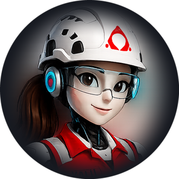

Abriendo tu enlace…
Antes de entrar, decinos desde dónde vas a seguir la capacitación.
Esta sala registra tu asistencia y tu tiempo de atención. No afecta tu nota — queda como registro de la capacitación.
—
Si se te corta internet, volvé a abrir este mismo enlace: tu asistencia ya quedó registrada y no la perdés.
—